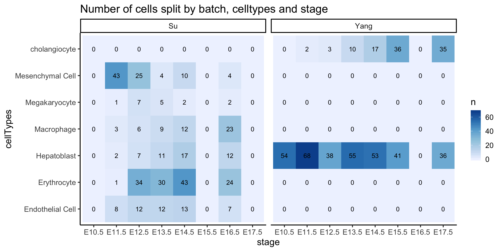
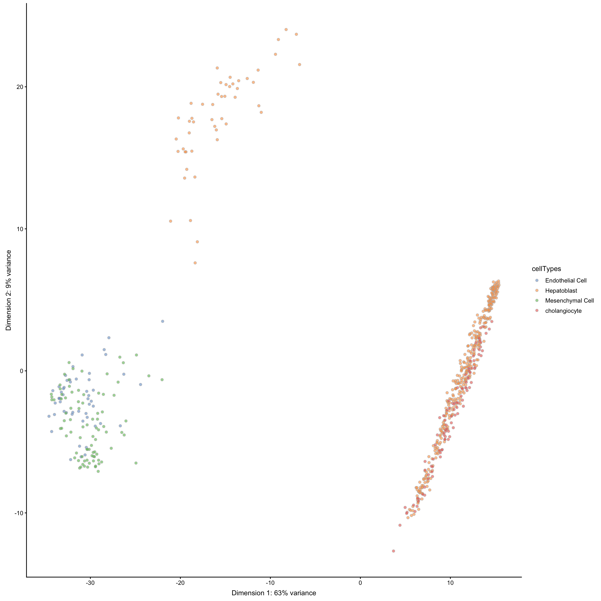
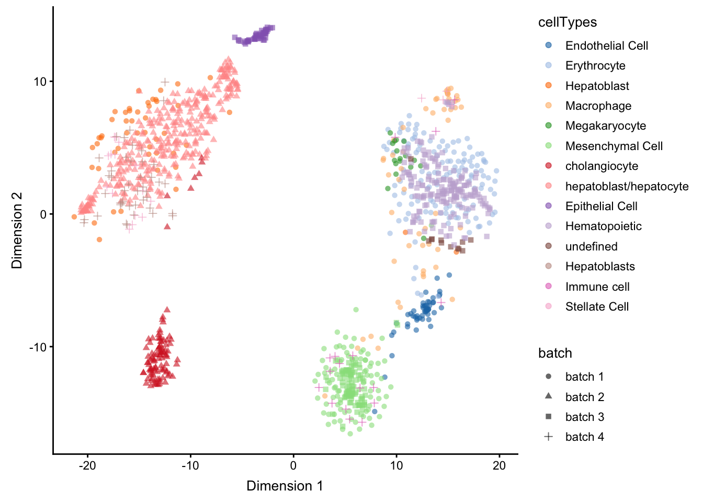

As discussed in 3rd May 2019, Kevin will work on this part of the workshop.
However, the raw data will be prepared by Yingxin and QC of the data are yet to be done.
scMerge is a method developed by the Sydney Precision Bioinformatics Group. It aims to merge multiple scRNA-Seq data so that researchers can look for biological signals on data pooled from multiple sources. The key to achieving a good merge is to remove the noise.
Here are some plots where the raw data is separated by the data-batches but not cell types.
scMerge corrects data-batch separations by
Thus, scMerge can be thought of a two-step process!
We will begin with a liver dataset. The data are stored as four separate RDS files (this is similar to a RData file, but only one data can be stored in each RDS file).
| Name | ID | Author | DOI or URL | Protocol | Organism | Tissue | # of cell types | # of cells | # of batches |
|---|---|---|---|---|---|---|---|---|---|
| Liver | GSE87795 | Su | 10.1186/s12864-017-4342-x | SMARTer/C1 | Mouse | Liver | 6 | 1236 | |
| GSE90047 | Yang | 10.1002/hep.29353 | Smart-Seq2 | 2 | |||||
| GSE87038 | Dong | 10.1186/s13059-018-1416-2 | STRT-seq | 3 | |||||
| GSE96981 | Camp | 10.1038/nature22796 | SMARTer/C1 | 3 |
su = readRDS("data/sce_GSE87795.rds")
yang = readRDS("data/sce_GSE90047.rds")
dong = readRDS("data/sce_GSE87038.rds")
camp = readRDS("data/sce_GSE96981.rds")
sce_list = list(su = su, yang = yang, dong = dong, camp = camp)library(scMerge)
library(scater)
library(dplyr)
purrr::map(sce_list, ~ colData(.x) %>% colnames)## $su
## [1] "batch"
## [2] "stage"
## [3] "cellTypes"
## [4] "total_features"
## [5] "log10_total_features"
## [6] "total_counts"
## [7] "log10_total_counts"
## [8] "pct_counts_top_50_features"
## [9] "pct_counts_top_100_features"
## [10] "pct_counts_top_200_features"
## [11] "pct_counts_top_500_features"
## [12] "total_features_endogenous"
## [13] "log10_total_features_endogenous"
## [14] "total_counts_endogenous"
## [15] "log10_total_counts_endogenous"
## [16] "pct_counts_endogenous"
## [17] "pct_counts_top_50_features_endogenous"
## [18] "pct_counts_top_100_features_endogenous"
## [19] "pct_counts_top_200_features_endogenous"
## [20] "pct_counts_top_500_features_endogenous"
## [21] "total_features_feature_control"
## [22] "log10_total_features_feature_control"
## [23] "total_counts_feature_control"
## [24] "log10_total_counts_feature_control"
## [25] "pct_counts_feature_control"
## [26] "pct_counts_top_50_features_feature_control"
## [27] "total_features_ERCC"
## [28] "log10_total_features_ERCC"
## [29] "total_counts_ERCC"
## [30] "log10_total_counts_ERCC"
## [31] "pct_counts_ERCC"
## [32] "pct_counts_top_50_features_ERCC"
## [33] "is_cell_control"
##
## $yang
## [1] "stage"
## [2] "batch"
## [3] "cellTypes"
## [4] "total_features"
## [5] "log10_total_features"
## [6] "total_counts"
## [7] "log10_total_counts"
## [8] "pct_counts_top_50_features"
## [9] "pct_counts_top_100_features"
## [10] "pct_counts_top_200_features"
## [11] "pct_counts_top_500_features"
## [12] "total_features_endogenous"
## [13] "log10_total_features_endogenous"
## [14] "total_counts_endogenous"
## [15] "log10_total_counts_endogenous"
## [16] "pct_counts_endogenous"
## [17] "pct_counts_top_50_features_endogenous"
## [18] "pct_counts_top_100_features_endogenous"
## [19] "pct_counts_top_200_features_endogenous"
## [20] "pct_counts_top_500_features_endogenous"
## [21] "total_features_feature_control"
## [22] "log10_total_features_feature_control"
## [23] "total_counts_feature_control"
## [24] "log10_total_counts_feature_control"
## [25] "pct_counts_feature_control"
## [26] "pct_counts_top_50_features_feature_control"
## [27] "total_features_ERCC"
## [28] "log10_total_features_ERCC"
## [29] "total_counts_ERCC"
## [30] "log10_total_counts_ERCC"
## [31] "pct_counts_ERCC"
## [32] "pct_counts_top_50_features_ERCC"
## [33] "is_cell_control"
##
## $dong
## [1] "cellTypes1" "stage"
## [3] "cellTypes" "total_features"
## [5] "log10_total_features" "total_counts"
## [7] "log10_total_counts" "pct_counts_top_50_features"
## [9] "pct_counts_top_100_features" "pct_counts_top_200_features"
## [11] "pct_counts_top_500_features" "is_cell_control"
##
## $camp
## [1] "cellTypes" "stage"sce_combine = scMerge::sce_cbind(sce_list = sce_list, method = "union", colData_names = c("cellTypes", "stage"))## The assay named 'counts' will be used to determine the proportion of zeroes for each batchsce_combine## class: SingleCellExperiment
## dim: 23110 1248
## metadata(0):
## assays(2): counts logcounts
## rownames(23110): ENSMUSG00000102331 ENSMUSG00000025902 ...
## __ambiguous __alignment_not_unique
## rowData names(0):
## colnames(1248): E11.5_C07 E11.5_C44 ... F5A_E16.5 F6A_E16.5
## colData names(3): cellTypes stage batch
## reducedDimNames(0):
## spikeNames(0):data("segList_ensemblGeneID", package = "scMerge")
sce_combine <- scMerge(sce_combine = sce_combine,
ctl = which(rownames(sce_combine) %in% segList_ensemblGeneID$mouse$mouse_scSEG),
kmeansK = c(6,2,3,3),
exprs = "logcounts",
hvg_exprs = "counts",
marker = NULL,
ruvK = 20,
cell_type = NULL,
dist = "cor",
replicate_prop = 1,
WV = sce_combine$stage,
# WV_marker = c("Afp","Alb","Epcam"),
WV_marker = c("ENSMUSG00000045394","ENSMUSG00000054932","ENSMUSG00000045394"),
return_all_RUV = FALSE,
assay_name = "scMerge_scSEG",
verbose = TRUE,
fast_svd = FALSE)## Step 1: Computation will run in serial## Performing unsupervised scMerge with:
## 1. No cell type information
## 2. Cell type indices not revelant here
## 3. Mutual nearest neighbour matching
## 4. No supplied marker and no supplied marker_list for MNN clustering
## Finding Highly Variable Genes for clustering
## 4515 HVG were found
## 5. PCA and Kmeans clustering will be performed on each batch
## 6. Create Mutual Nearest Clusters. Preview cells-cell_type matching output matrix:## group batch cluster
## 1 1 1 2
## 2 1 2 1
## 3 1 3 2
## 4 4 1 5
## 5 4 3 1
## 6 2 1 6
## 7. Performing semi-supervised scMerge with wanted variation
## Dimension of the replicates mapping matrix:
## [1] 1248 19## Step 2: Performing RUV normalisation. This will take minutes to hours.## scMerge complete!
scater::plotTSNE(sce_combine,
colour_by = 'cellTypes', shape = 'batch',
run_args = list(exprs_values = 'logcounts'))
scater::plotTSNE(sce_combine,
colour_by = 'cellTypes', shape = 'batch',
run_args = list(exprs_values = 'scMerge_scSEG'))
sessionInfo()## R version 3.6.0 (2019-04-26)
## Platform: x86_64-apple-darwin15.6.0 (64-bit)
## Running under: macOS High Sierra 10.13.6
##
## Matrix products: default
## BLAS: /System/Library/Frameworks/Accelerate.framework/Versions/A/Frameworks/vecLib.framework/Versions/A/libBLAS.dylib
## LAPACK: /Library/Frameworks/R.framework/Versions/3.6/Resources/lib/libRlapack.dylib
##
## locale:
## [1] en_AU.UTF-8/en_AU.UTF-8/en_AU.UTF-8/C/en_AU.UTF-8/en_AU.UTF-8
##
## attached base packages:
## [1] parallel stats4 stats graphics grDevices utils datasets
## [8] methods base
##
## other attached packages:
## [1] dplyr_0.8.1 scater_1.12.1
## [3] ggplot2_3.1.1 SingleCellExperiment_1.6.0
## [5] SummarizedExperiment_1.14.0 DelayedArray_0.10.0
## [7] BiocParallel_1.18.0 matrixStats_0.54.0
## [9] Biobase_2.44.0 GenomicRanges_1.36.0
## [11] GenomeInfoDb_1.20.0 IRanges_2.18.0
## [13] S4Vectors_0.22.0 BiocGenerics_0.30.0
## [15] scMerge_1.0.0 rmarkdown_1.12
##
## loaded via a namespace (and not attached):
## [1] nlme_3.1-140 bitops_1.0-6
## [3] RColorBrewer_1.1-2 numDeriv_2016.8-1
## [5] tools_3.6.0 backports_1.1.4
## [7] R6_2.4.0 irlba_2.3.3
## [9] rpart_4.1-15 KernSmooth_2.23-15
## [11] vipor_0.4.5 uwot_0.1.3
## [13] mgcv_1.8-28 Hmisc_4.2-0
## [15] lazyeval_0.2.2 colorspace_1.4-1
## [17] nnet_7.3-12 withr_2.1.2
## [19] tidyselect_0.2.5 gridExtra_2.3
## [21] compiler_3.6.0 BiocNeighbors_1.2.0
## [23] htmlTable_1.13.1 labeling_0.3
## [25] caTools_1.17.1.2 scales_1.0.0
## [27] checkmate_1.9.3 proxy_0.4-23
## [29] stringr_1.4.0 digest_0.6.19
## [31] foreign_0.8-71 XVector_0.24.0
## [33] base64enc_0.1-3 pkgconfig_2.0.2
## [35] htmltools_0.3.6 ruv_0.9.7
## [37] bbmle_1.0.20 htmlwidgets_1.3
## [39] rlang_0.3.4 rstudioapi_0.10
## [41] FNN_1.1.3 DelayedMatrixStats_1.6.0
## [43] gtools_3.8.1 acepack_1.4.1
## [45] RCurl_1.95-4.12 magrittr_1.5
## [47] BiocSingular_1.0.0 GenomeInfoDbData_1.2.1
## [49] Formula_1.2-3 Matrix_1.2-17
## [51] Rcpp_1.0.1 ggbeeswarm_0.6.0
## [53] munsell_0.5.0 viridis_0.5.1
## [55] stringi_1.4.3 yaml_2.2.0
## [57] zlibbioc_1.30.0 Rtsne_0.15
## [59] gplots_3.0.1.1 plyr_1.8.4
## [61] grid_3.6.0 gdata_2.18.0
## [63] M3Drop_1.10.0 reldist_1.6-6
## [65] crayon_1.3.4 lattice_0.20-38
## [67] cowplot_0.9.4 splines_3.6.0
## [69] knitr_1.23 pillar_1.4.0
## [71] igraph_1.2.4.1 codetools_0.2-16
## [73] glue_1.3.1 packrat_0.5.0
## [75] evaluate_0.13 latticeExtra_0.6-28
## [77] RcppParallel_4.4.2 data.table_1.12.2
## [79] foreach_1.4.4 gtable_0.3.0
## [81] purrr_0.3.2 assertthat_0.2.1
## [83] xfun_0.7 rsvd_1.0.0
## [85] RcppEigen_0.3.3.5.0 RSpectra_0.14-0
## [87] survival_2.44-1.1 viridisLite_0.3.0
## [89] tibble_2.1.1 iterators_1.0.10
## [91] beeswarm_0.2.3 cluster_2.0.9
## [93] statmod_1.4.30t2 - t1## Time difference of 1.112507 mins